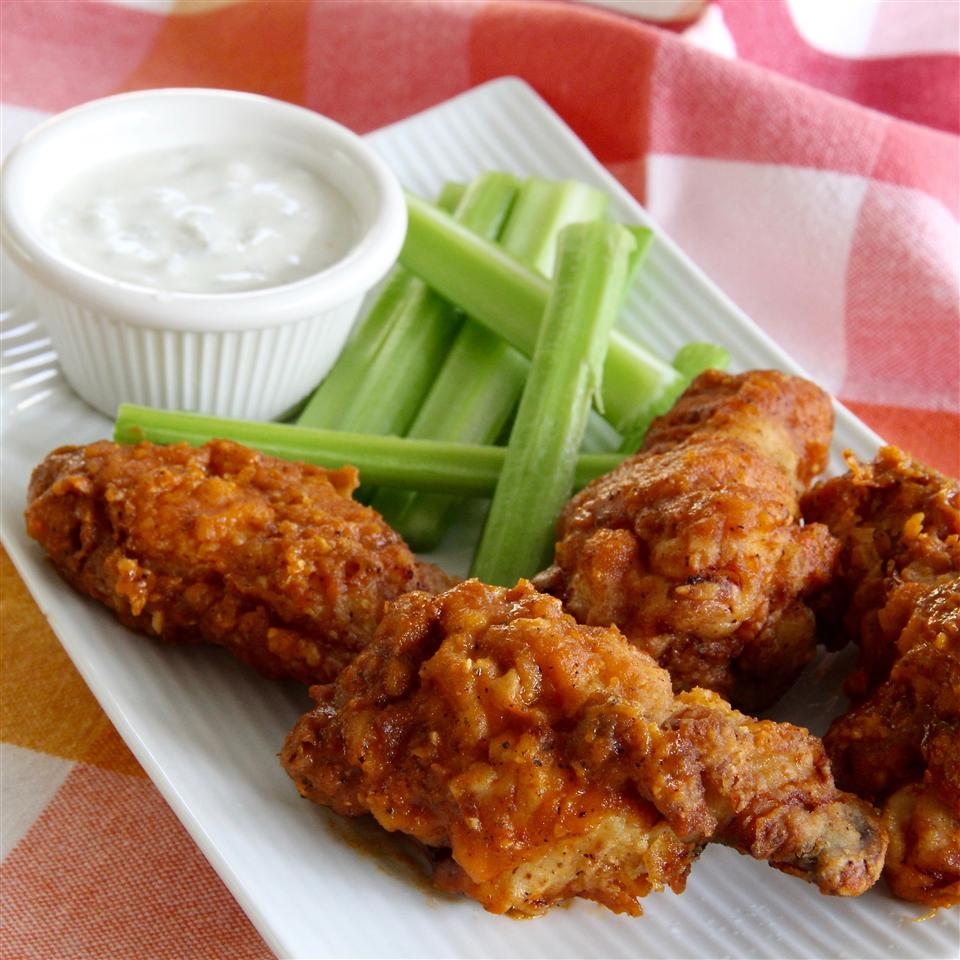

Crisp Fried Chicken Wings

Description
This crisp fried chicken wings recipe will leave your
tastebuds longing for more after you have your first bite into
their golden crispy texture. The recipe has a prep time of 15
minutes and a cook time of 25 minutes, so the recipe only requires
a total of 40 minutes to complete. The recipe is for 5
servings, please adjust the serving size to adjust the amount of ingredients
needed.
Nutrition Facts
Per Serving: 331 calories; protein 15.4g; carbohydrates
14.1g; fat 23.4g; cholesterol 46mg; sodium 300.5mg.
Ingredients
- 1/2 cup flour
- 1/2 teaspoon salt
- 1/2 teaspoon paprika
- 1/4 teaspoon garlic powder
- 1/4 teaspoon ground black pepper
- 1 can of evaporated milk (5.3 ounces)
- 10 chicken wings
- 1/2 cup olive oil
- 1 pinch paprika, or to taste
Steps
- Mix flour, salt, 1/2 teaspoon paprika, garlic powder,
and black pepper together in a sealable plastic bag.
- Pour evaporated milk into a bowl. Dip a few chicken wings
into evaporated milk to coat. Remove wings from milk and
shake to remove excess. Put wings into the sealable bag,
seal the bag, and shake to coat wings in flour mixture.
Move coated wings to a plate, keeping them from touching.
Repeat process with remaining wings until all are coated
in the flour mixture.
- Heat olive oil in a large skillet over medium-high heat.
- Fry chicken wings in hot olive oil, turning regularly,
until browned on all sides and no longer pink at the bone,
about 25 minutes. An instant-read thermometer inserted into
the thickest part of the meat, near the bone should read
165 degrees F (74 degrees C). Season fried wings with
additional paprika.